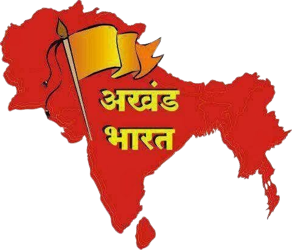

Akhand Bharat (अखण्ड भारत)

Akhand Bharat (transl.'Undivided India'), also known as Akhand Hindustan, is a term for the concept of a unified Greater India. The idea of Akhand Bharat in it's most widely accepted form is that Afghanistan, Bangladesh, Pakistan, Bhutan, Nepal, Maldives, Myanmar and Sri Lanka is one nation.
(अखण्ड भारत या अखण्ड हिन्दुस्तान एक संयुक्त वृहद भारत की अवधारणा के लिए एक शब्द है। यह दावा करता है कि आधुनिक युग का अफ़ग़ानिस्तान, बांग्लादेश, भूटान, भारत, मालदीव, म्यान्मार, नेपाल, पाकिस्तान और श्रीलंका एक ही राष्ट्र हैं।)
History (इतिहास)
- During the Indian independence movement, K.M. Munishi advocated for Akhand Hindustan, a proposition that Mahatma Gandhi agreed with, believing that "as Britain wanted to retain her empire by pursuing a policy of divide and rule, Hindu-Muslim unity could not be achieved as long as the British were there.
(भारतीय स्वतंत्रता आंदोलन के दौरान, के.एम. मुनिशी ने अखंड हिंदुस्तान की वकालत की, एक ऐसा प्रस्ताव जिससे महात्मा गांधी सहमत थे, उनका मानना था कि "चूंकि ब्रिटेन बांटो और राज करो की नीति अपनाकर अपने साम्राज्य को बनाए रखना चाहता था, इसलिए हिंदू-मुस्लिम एकता तब तक हासिल नहीं की जा सकती थी जब तक अंग्रेज थे।)
- In addition, Mazhar Ali Khan wrote that "the Khan brothers [were] determined to fight for Akhand Hindustan, and challenged the League to fight the issue out before the electorate of the Province." On 7-8 October 1944, in Delhi, Radha Kumud Mukherjee presided over the Akhand Hindustan Leaders' Conference.
(इसके अलावा, मजहर अली खान ने लिखा है कि "खान भाई अखंड हिंदुस्तान के लिए लड़ने के लिए [दृढ़] थे, और प्रांत के मतदाताओं के सामने इस मुद्दे से लड़ने के लिए लीग को चुनौती दी।" 7-8 अक्टूबर 1944 को दिल्ली में राधा कुमुद मुखर्जी ने अखंड हिन्दुस्तान लीडर्स कांफ्रेंस की अध्यक्षता की।)
- The Indian activist and Hindu Mahasabha leader Vinayak Damodar Savarkar at the Hindu Mahasabha's 19th Annual Session in Ahmedabad in 1937 propounded the notion of an Akhand Bharat that "must remain one and indivisible" "from Kashmir to Rameswaram, from Sindh to Assam.
(1937 में अहमदाबाद में हिंदू महासभा के 19वें वार्षिक सत्र में भारतीय कार्यकर्ता और हिंदू महासभा के नेता विनायक दामोदर सावरकर ने अखंड भारत की धारणा को प्रतिपादित किया कि "एक और अविभाज्य रहना चाहिए" "कश्मीर से रामेश्वरम तक, सिंध से असम तक।)
- He said that "all citizens who owe undivided loyalty and allegiance to the Indian nation and to the Indian state shall be treated with perfect equality and shall share duties and obligations equally in common, irrespective of caste, creed or religion, and the representation also shall either be on the basis of one man one vote or in proportion to the population in case of separate electorates and public services shall go by merit alone.
(उन्होंने कहा कि "सभी नागरिक जो भारतीय राष्ट्र और भारतीय राज्य के प्रति अविभाजित वफादारी और निष्ठा रखते हैं, उनके साथ पूर्ण समानता के साथ व्यवहार किया जाएगा और जाति, पंथ या धर्म के बावजूद कर्तव्यों और दायित्वों को समान रूप से साझा करेंगे, और प्रतिनिधित्व भी करेंगे या तो एक व्यक्ति एक वोट के आधार पर या पृथक निर्वाचक मंडल के मामले में जनसंख्या के अनुपात में और सार्वजनिक सेवाएं अकेले योग्यता के आधार पर होंगी।)
Interpretations (व्याख्याओं)
- Though Parties like BJP supports the concept of Akhand Bharat, there are many other Interpretations how and United India should be like. According to some, many ancient Indian Kingdoms had many of the modern-day countries in their territory.
(हालांकि बीजेपी जैसी पार्टियां अखंड भारत की अवधारणा का समर्थन करती हैं, लेकिन कई अन्य व्याख्याएं हैं कि कैसे और संयुक्त भारत कैसा होना चाहिए। कुछ के अनुसार, कई प्राचीन भारतीय राज्यों में उनके क्षेत्र में कई आधुनिक देश थे।)
- (Example: Tibet being a territory of King Lalitaditya of Karkota Dynasty.) This concept of a bit more extensive version Akhand Bharat is supported by RSS leader Mohan Bhagwat.
(उदाहरण: तिब्बत कर्कोटा राजवंश के राजा ललितादित्य का एक क्षेत्र है।) थोड़ा और व्यापक संस्करण अखंड भारत की यह अवधारणा आरएसएस नेता मोहन भागवत द्वारा समर्थित है।)
- The most extensive verison of Akhand Bharat, it posits that modern day Malaysia, Philippines, Thailand, South Vietnam, Cambodia, Indonesia along with the other 9 mostly accepted countries are one nation.
(अखंड भारत का सबसे व्यापक कथन, यह मानता है कि आधुनिक दिन मलेशिया, फिलीपींस, थाईलैंड, दक्षिण वियतनाम, कंबोडिया, इंडोनेशिया के साथ-साथ अन्य 9 ज्यादातर स्वीकृत देश एक राष्ट्र हैं।)
- This is mostly told by Indian citizens who supports Akhand Bharat. This is based on different Indian Kingdoms capturing different parts of Asia throughout the course of History
(यह ज्यादातर भारतीय नागरिकों द्वारा बताया जाता है जो अखंड भारत का समर्थन करते हैं। यह इतिहास के दौरान एशिया के विभिन्न हिस्सों पर कब्जा करने वाले विभिन्न भारतीय राज्यों पर आधारित है।) .
- The most extensive verison though, is not supported by the majority.
(सबसे व्यापक कथन हालांकि बहुमत द्वारा समर्थित नहीं है।)
Read More